2019-09-13 Lab Session
Using GitHub Desktop and GitHub
One of the most important things you'll need to familiarize yourself with in this lab is working with Git through GitHub Desktop. This tool helps us manage the complexity of having 30+ developers all working on the same codebase.
In this lab, we'll use a 'feature branch' workflow for Git. Git lets us create multiple branches of the codebase with different changes; the workflow we'll be using means that one branch -- master -- will only accept changes that have been reviewed and approved by your peers and staff.
Whenever we want to work on the codebase, we'll create a branch, make our changes, push that branch to GitHub, and when the feature is ready to merge into the shared codebase, make a pull request. A pull request (PR) notifies teammates that you have code that you want to merge into our master branch that is ready for review.
Atlassian has a great series of Git tutorials, and this one on the 'Feature Branch Workflow' is worth a skim. It uses the command line interface to Git, whereas we'll be using GitHub Desktop in this lab.
Onward to your first PR on this project. Do this tutorial in groups of three to five, so gather a few of your colleagues, open GitHub Desktop, and let's get started.
Some of the steps that follow should be performed on only one machine, but please make sure that everyone follows along for everything.
Fetching and pulling from master (everyone do this)
When you sit down to work always start by pulling the latest changes from the master branch, so that your local copy of the codebase doesn't diverge too much from the current version.
Start by clicking Fetch origin. This downloads the latest code from GitHub. Once that's done, click the same button, now labelled Pull origin. This merges the downloaded code into your current branch. The little number on the right shows how many commits your branch is behind the code that you've downloaded. For now, you can think of a commit as a single save. Ryaan's made a bunch of commits over the last few days, so you should see something here.
If the button still says Fetch origin, then you're already up to date (i.e. you have pulled all of the changes and can skip this step.
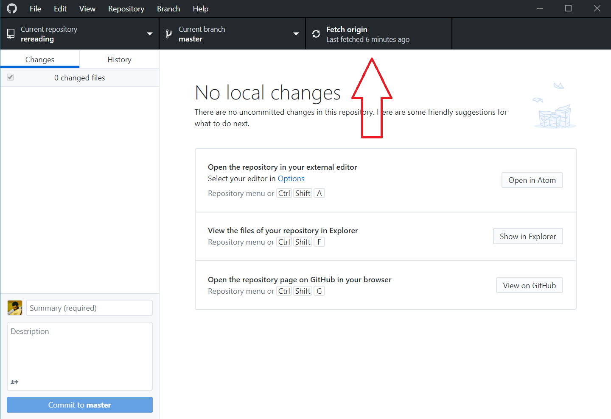
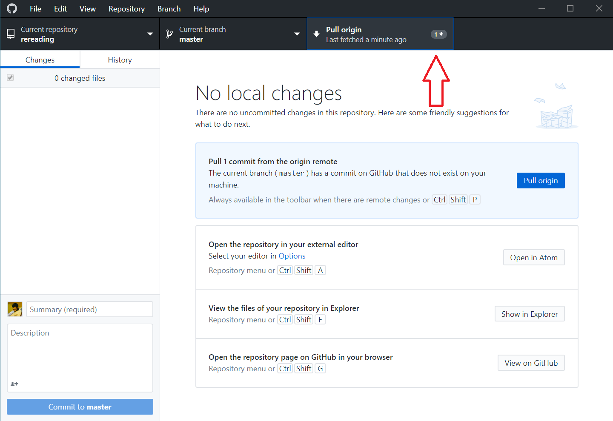
Create a feature branch (do this on one computer only)
Instead of working directly on the master branch, we'll make a feature branch for your first commits and PR.
Click the Current branch button and click New branch. Call your new branch group_first_names_first_PR (e.g., ryaan_myke_first_PR) and click Create branch. When this is complete, you should see the Current branch button show that you're on your newly created branch.
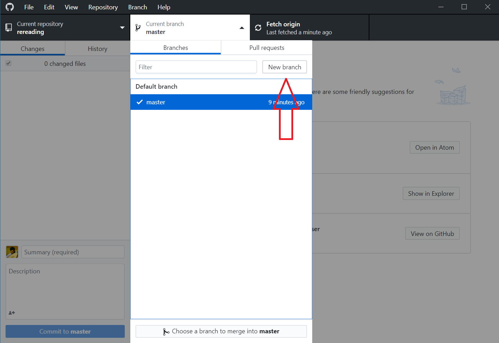
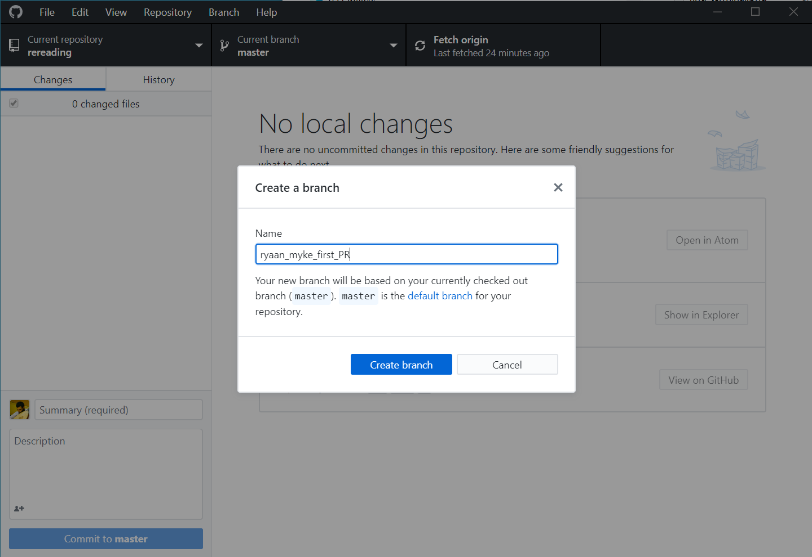
Click Publish branch to send this newly created branch to GitHub, so that the rest of your team can check it out.
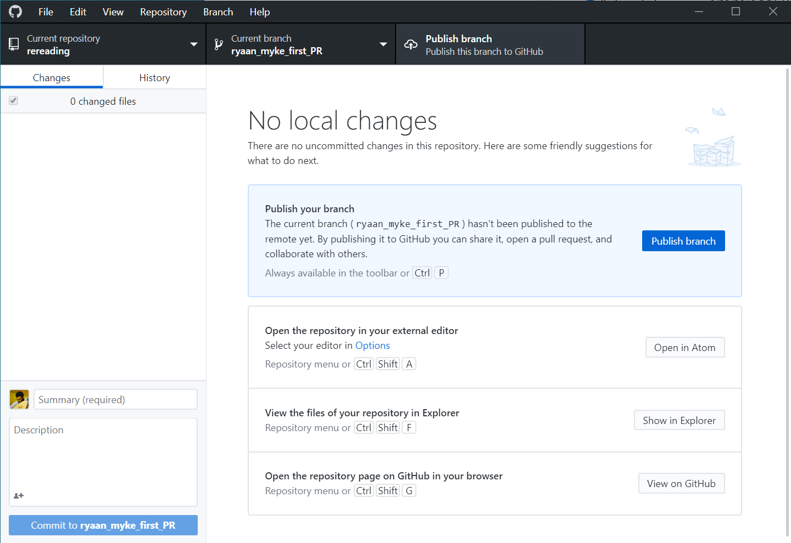
Check out the new branch (do this on the other computers)
Click Fetch origin again to grab all of the latest data from GitHub, including the information that your teammate created a new branch. Click Current branch, and you should now see the new branch appear in the dropdown list. Click it to check it out.
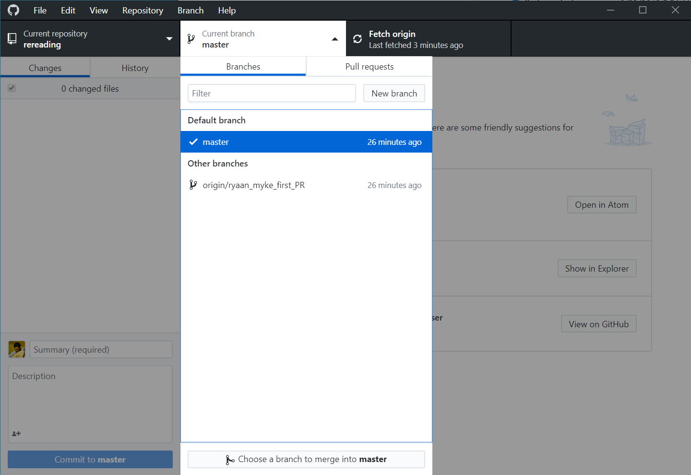
At this point, everyone in your group should be on the same branch, as indicated by the text under Current branch. Wait until everyone's synced up, and then move on to the next step. If you can't get everyone synced up, ask a staff member or returning UROP for help before moving on to the next step.
Make a commit to share with everyone (do this on one computer only)
Open our project in PyCharm. Find the folder docs/first_pr, right click on it, and create a new file. Name this file again with the first names of everyone on your team, and give it the extension .md for Markdown.
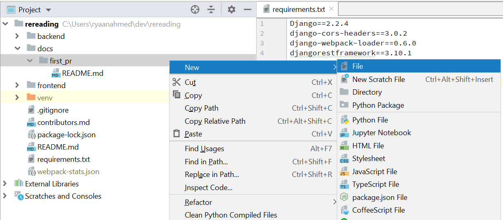
When you create a new file in PyCharm, it asks if you want to add it to Git. It doesn't really matter what you choose here; we do want to add it to Git, but we'll be adding everything through GitHub Desktop anyway.
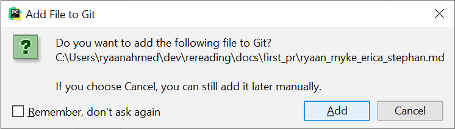
Add some content to this file - a heading (starting with #), and the name of the team member on whose computer you're doing this step.
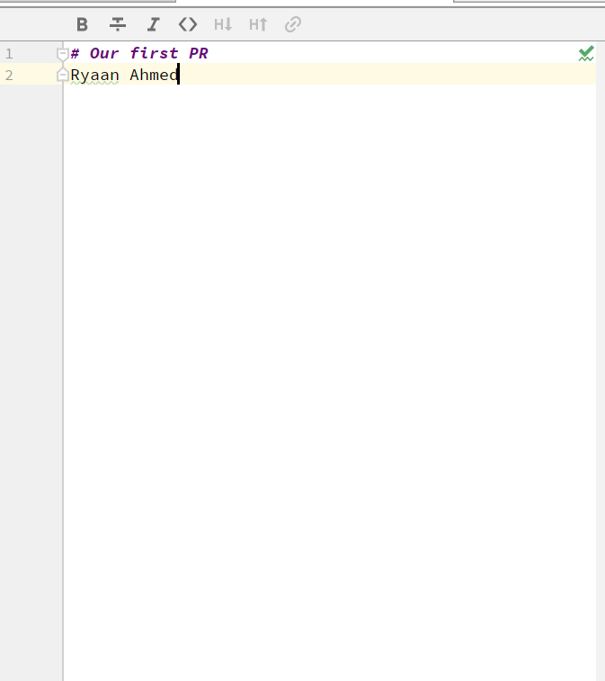
Now, go back to GitHub Desktop. You should see a screen like this, which shows the file you added and the changes you made in that file. In the bottom left corner (in the smaller box next to your profile picture), write a commit message, describing the changes you made, and then click Commit to YOUR_BRANCH.
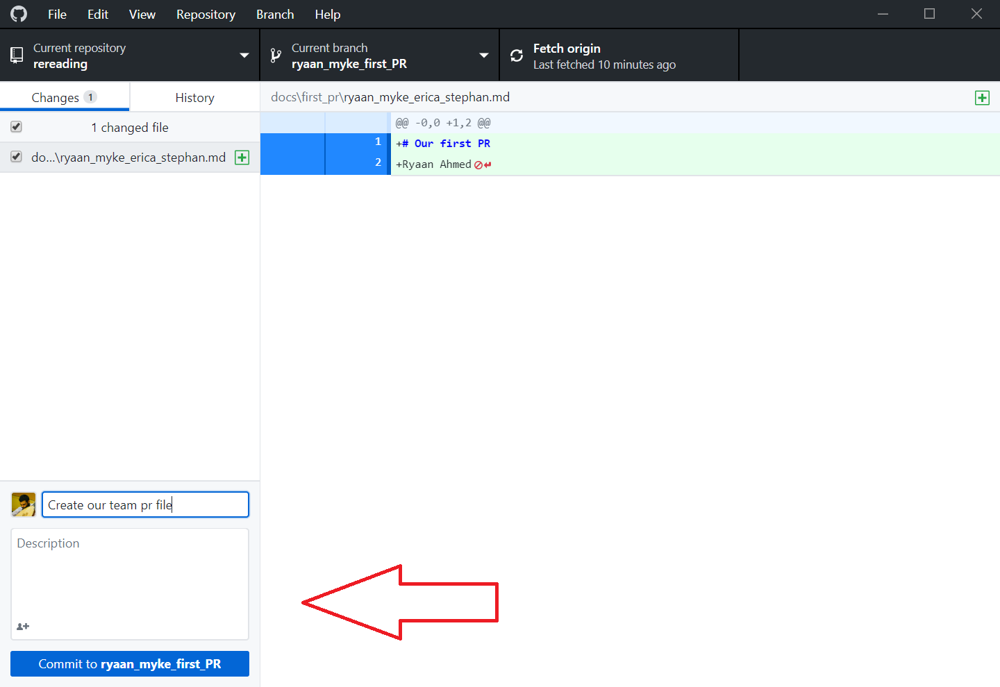
Now click Push origin to send your changes to GitHub, so the rest of your team can download them.
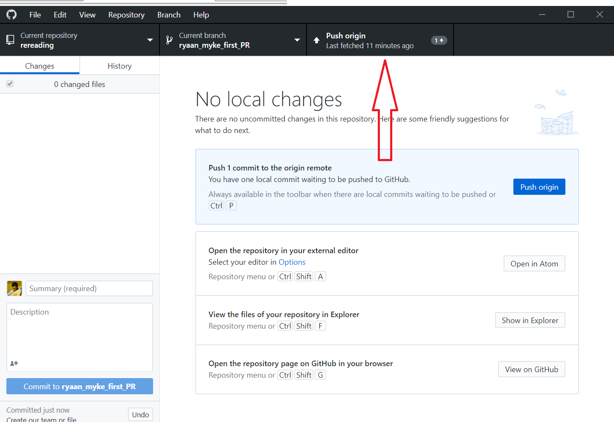
Make a change and commit it (on the other computers)
Click Fetch origin and Pull origin to merge the changes from the last step into your local copy. Open PyCharm and add your own name to the file that was created. Make a commit, in the same manner as above. Now STOP -- DO NOT PUSH / FETCH / PULL. Wait until everyone's made a change to this file and commited it. We're about to cause your first merge conflict.
Once everyone's ready, this might be a good time to grab a staff member if no one on your team has worked with Git before. Here's what's about to happen: Git is usually very good at merging work, but we've just made a bunch of different changes in the same place to the same file.
One member of your team can now click Push origin. This should cause no problems.
The next member of the team should now click Push origin, which should cause an error message like this. Make sure everyone on the team reads and understands this message before moving on. Then, click Fetch and then Pull origin.
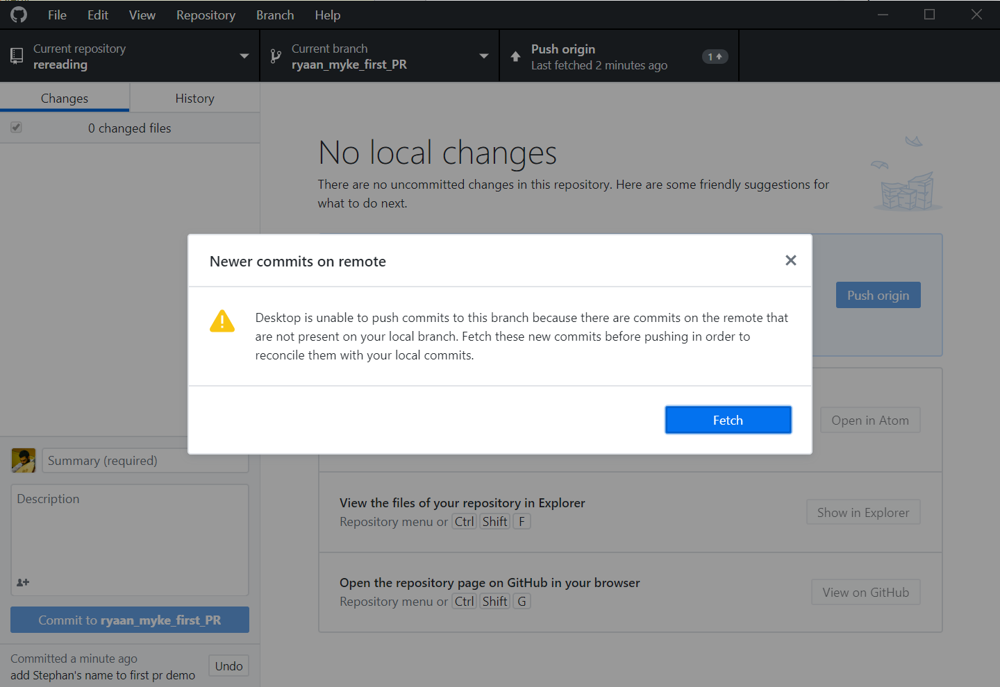
UH OH. Merge conflict time. Because we've made two changes to the same file in the same place, Git doesn't know how to merge them, so we'll have to do it manually. Click Open in Atom.
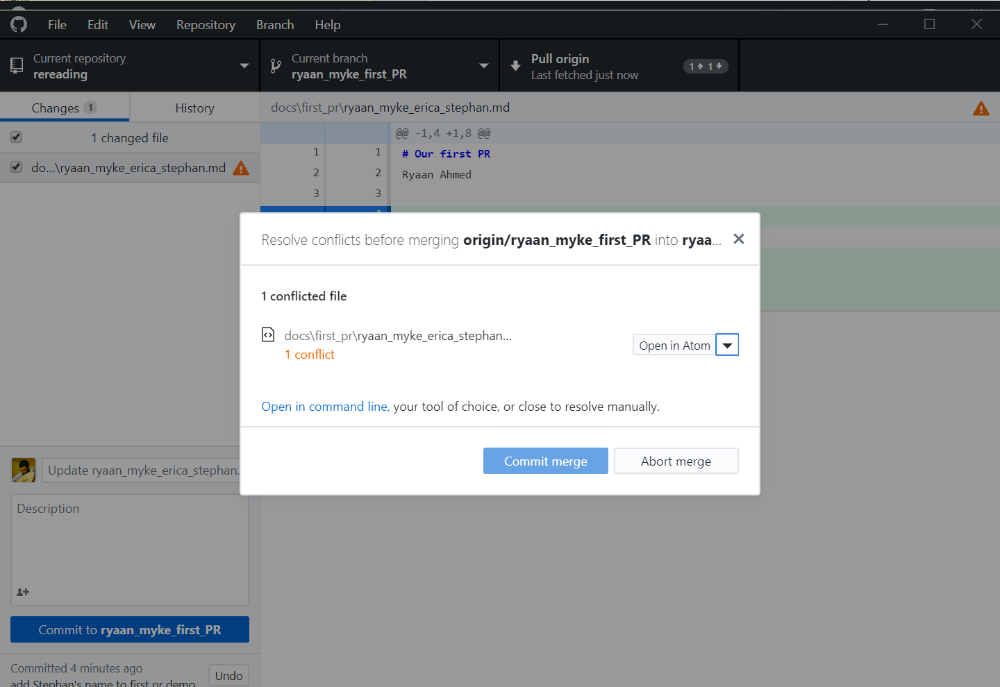
Atom has a great merge conflict resolution tool, but it assumes that you want either one change or the other (which is the usual case!). If you click Use me on either of these, you'll accept one change into the file and clobber the other. In this case, however, we want to preserve both changes, so click the ... next to Use me and choose Resolve as Ours Then Theirs to combine both changes into the file. Save the file and exit Atom.
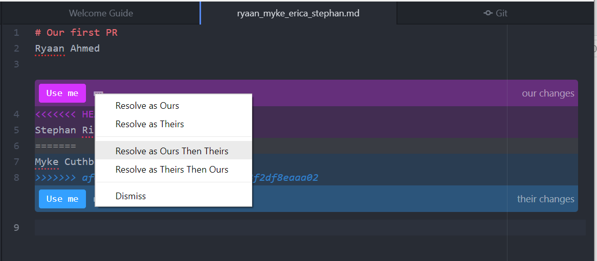
Back in GitHub Desktop, you should see this status, and click Commit merge. You can now click Push origin, and repeat this process with everyone else in the group.
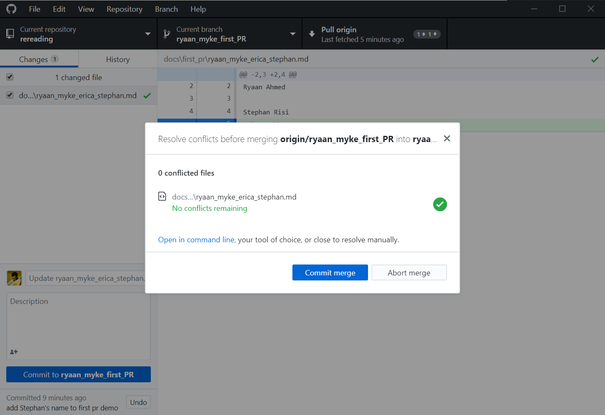
Just to be clear: most of the time we're working, chances are you won't be working directly on the same part of the same file as a teammate, so generally Git will resolve conflicts for us... but merge conflicts do happen, and you should be ready to resolve them if necessary.
Make a Pull Request (on one computer)
Once everyone's contribution is merged into the branch, do this step on a machine that has all of the commits from everyone in your group. Click Create Pull Request.
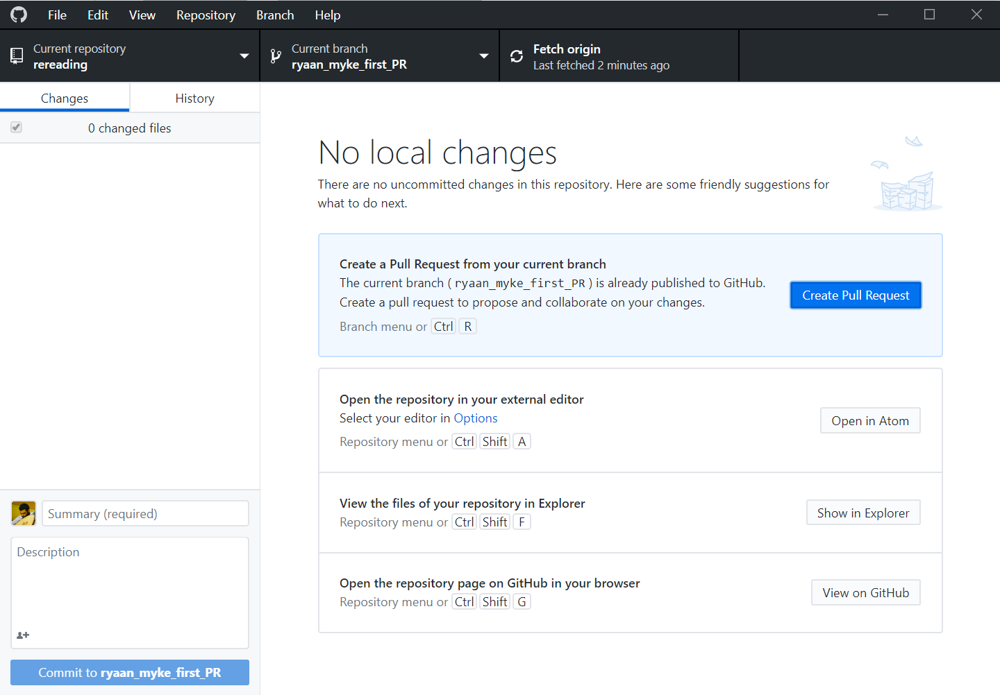
Take some time to examine the webpage that launches. You should see a list of the commits that you've all made (make sure they're all there!), as well as a list of changes you've made to the project. Give the PR a descritive name, and in the Leave a comment box, describe the contribution that this PR makes to the project. I like to write a bulleted list of anything the reviewer should know about the PR. Click the Reviewers field and request a review from ryaanahmed. Finally, click Create pull request.
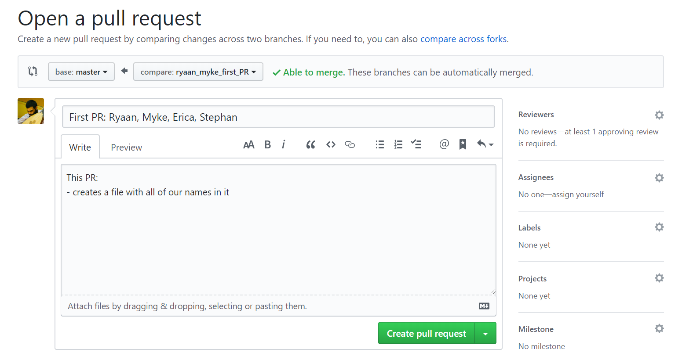
Although this first PR is trivial, once you're writing real code in the system, you may receive feedback on a pull request that asks for changes before we merge it into the master branch.
One last thing...
Go back to GitHub Desktop. Now that you've made a PR, you can switch your Current branch back to master. When you next sit down to start making a new feature, you'll repeat the steps above to work on a new branch, push that branch to GitHub, and then make a PR when it's ready to merge into the codebase.
While you're working on a feature branch
Whenever you start working, if you're on a branch, clicking Fetch origin and then Pull origin only pulls changes from your current branch. You'll want to make a habit of clicking Fetch origin, Pull origin, and then also going to the menu item Branch -> Update from master. This will merge any changes from the master branch into your current working branch, so that your feature branch doesn't drift too far away from master.
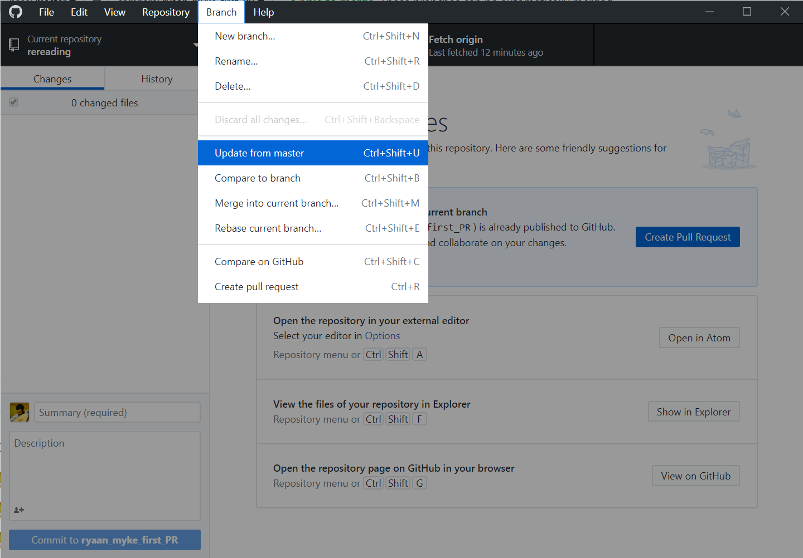
Things to remember
Commit often. My practice is that whenever I do anything that feels like a win, I make a commit with a message describing what I've done. (Good: Added 'submit' button to the instructor view or Wrote a test for the Student model or Fixed mistake I made with that button earlier; now it works! Bad: Updated views.py) A commit should not have the granularity of a single file save, nor should you wait until you finish implementing a big feature before commiting.
Always always always be descriptive in your commit messages and PRs. These are a form of communication to your teammates.